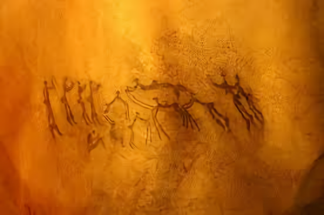
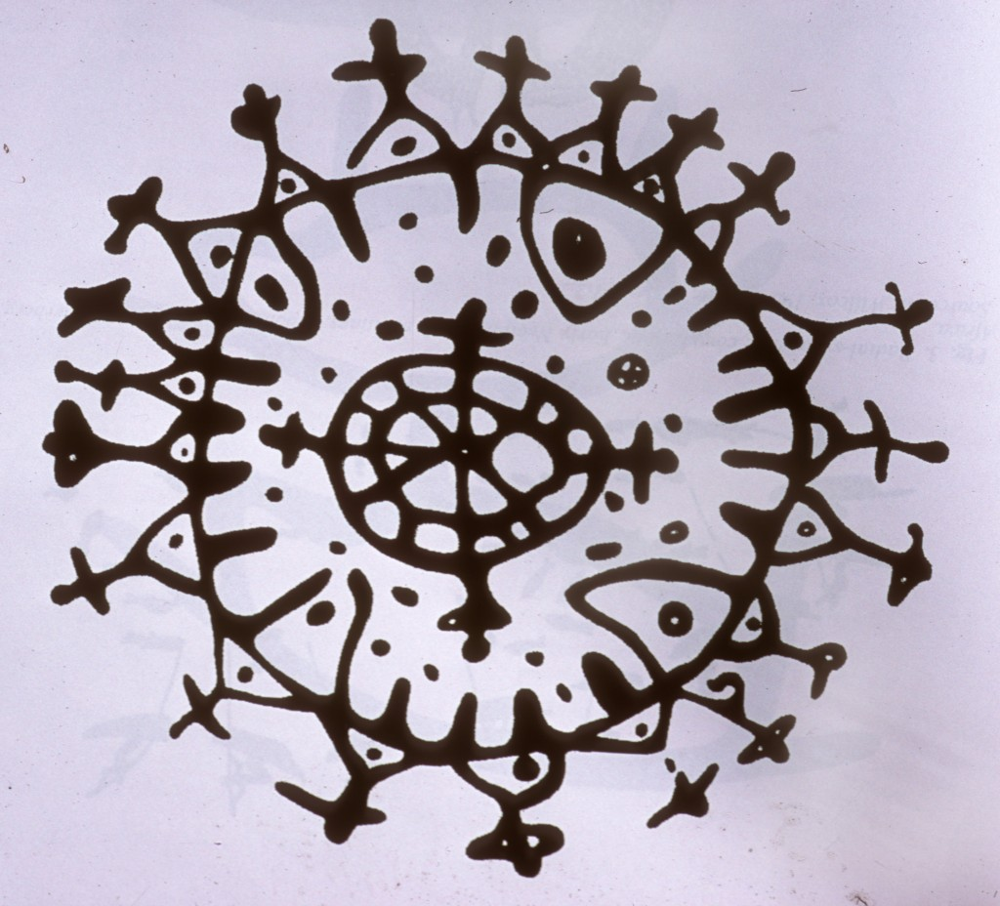
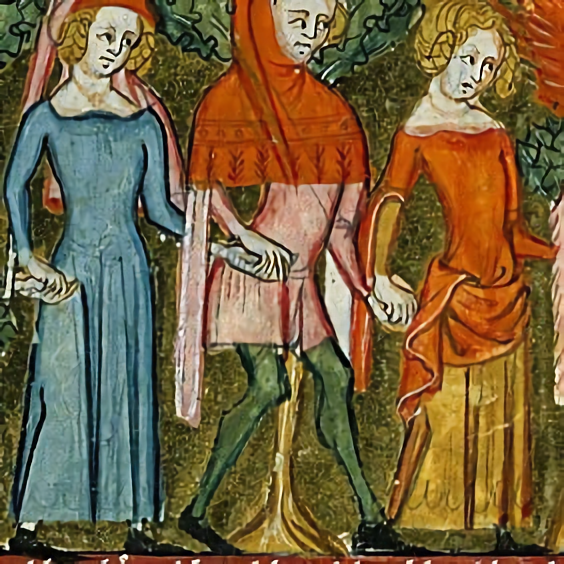
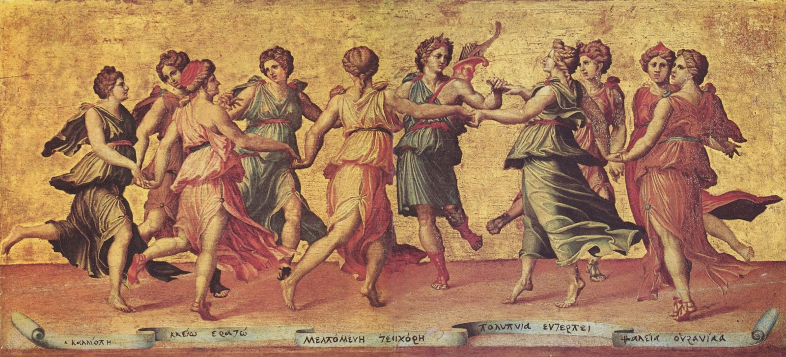
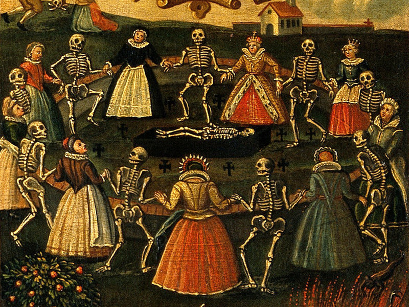
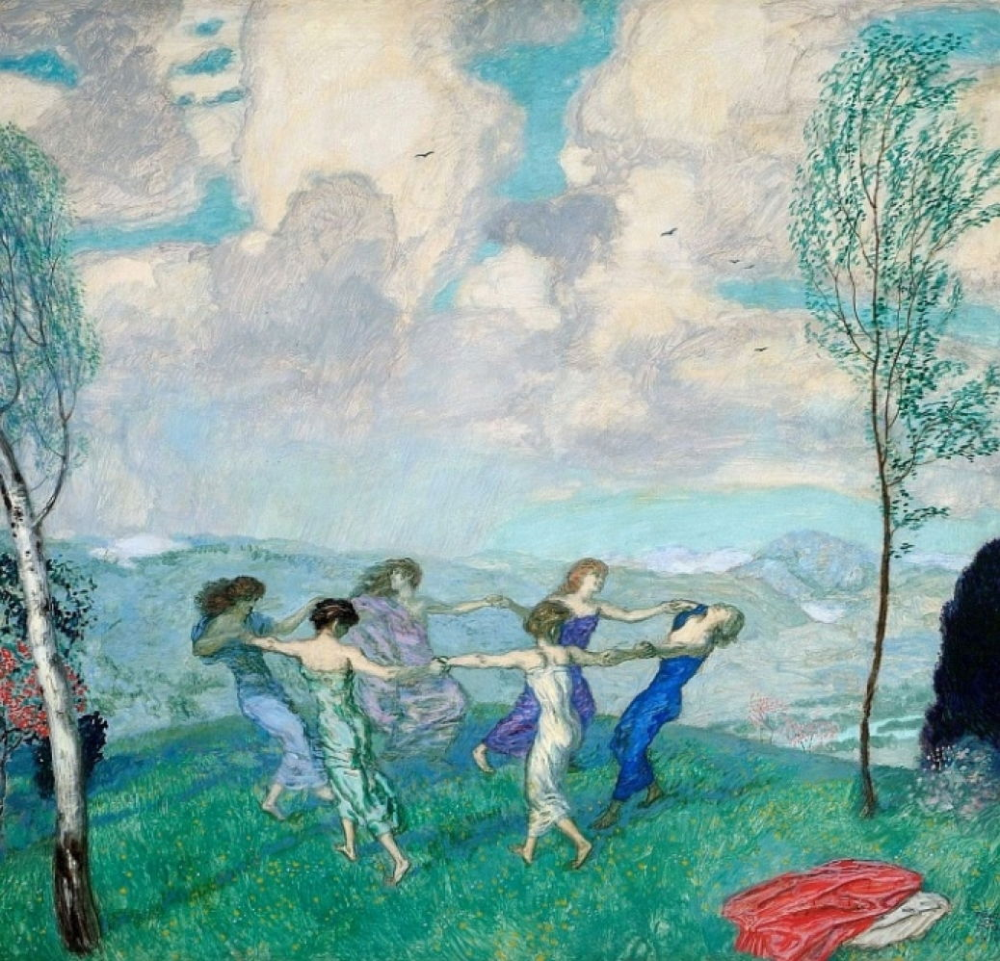
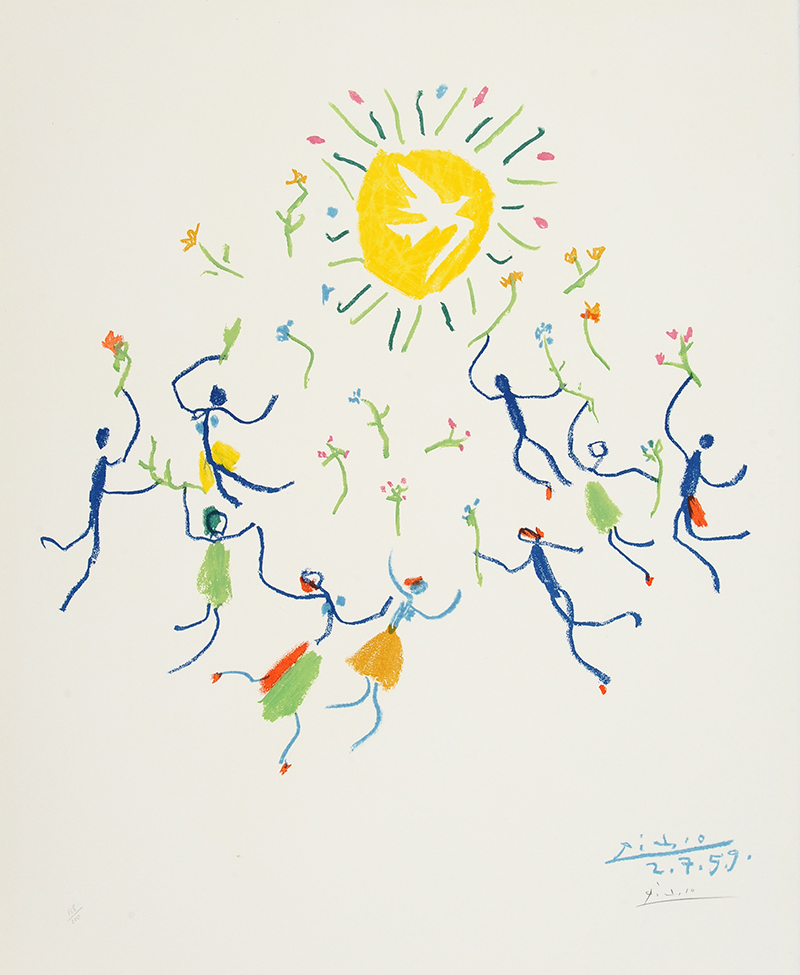
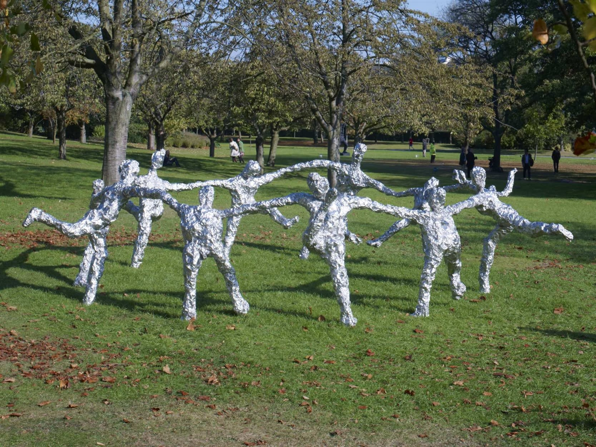
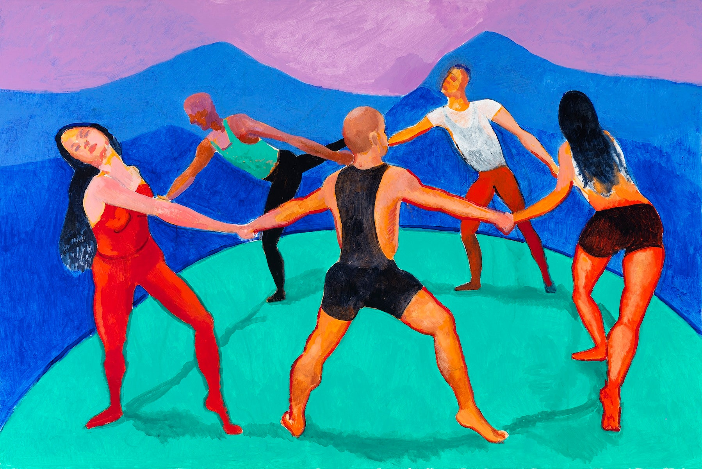

Sandie Morrison
2020

Dance Scene (Date unknown)

circa approx. 3000BC-300BC

Panel of Roman de la rose (medieval poem)

Apollo and the muses - Baldassare Peruzzi

Dance of death - (Wellcome Library no. 45066i)
Ring o roses - Frederick Morgan

Circle Dancing - Franz Von Stuck

La ronde de la Jeunesse - Pablo Picasso

Sculpture Circle Dance Tom Friedman

Dancers VII - David Hockney
wedding invitiation - Molly Costello